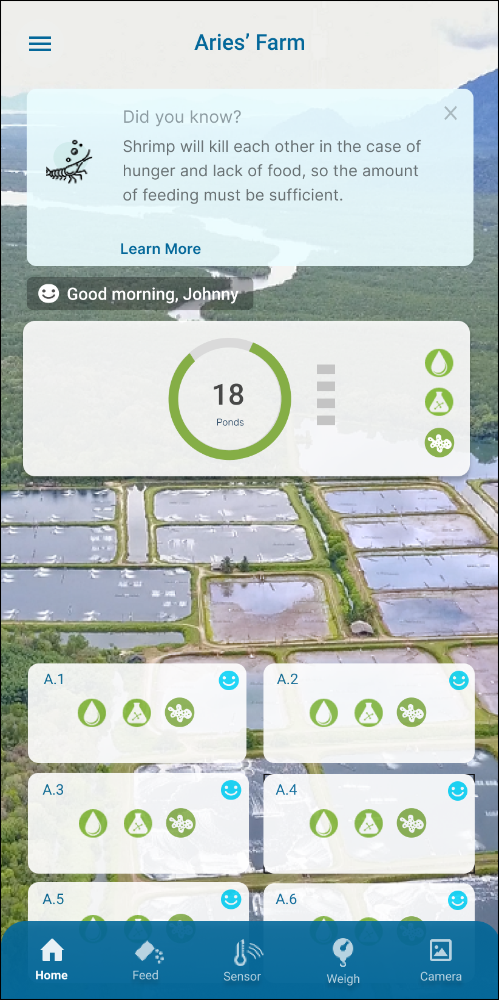
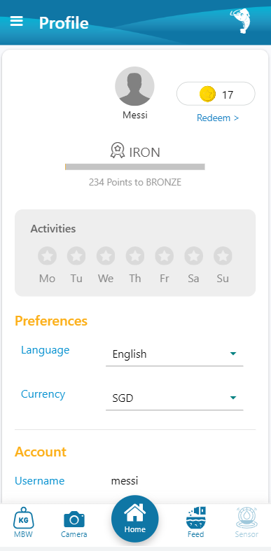
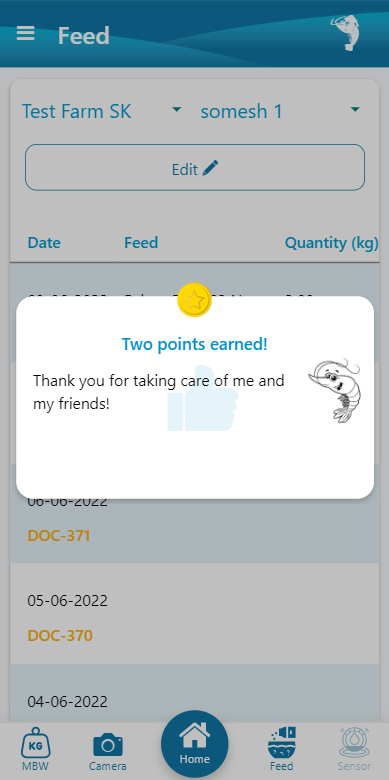

AgriTech · Mobile UX · Behaviour Change · Data Quality · AI Adoption
Overview
Aquaculture farms relied on daily operational data—feeding, water quality, stock health, and lab records—to generate AI-driven farming recommendations. But field data entry was often inconsistent, delayed, or treated as low-priority admin work.
Without reliable input data, even strong AI models produced weaker recommendations.
The real challenge was not only interface usability. It was user motivation.

Prototype home screen dashboard
My Role
UX Designer responsible for mobile experience design, user research, workflow design, prototyping, and usability improvements in collaboration with product and engineering teams.
Problem Context
Farm teams worked in fast-moving physical environments where operational tasks came first. Data entry was secondary.
Common issues included:
- Missing or delayed records
- Incomplete datasets across teams
- Low engagement with digital reporting tools
- Limited trust in AI recommendations when outputs felt inaccurate
The product needed better data quality, but users needed a better reason to participate.
What I Solved
I redesigned the mobile data capture experience to be faster, clearer, and more rewarding to use in real-world farm conditions.
Alongside simplified mobile workflows, I proposed a gamified incentive system that linked daily actions to tangible rewards.
- Core Experience Improvements
- Mobile-first workflows for quick on-site entry
- Reduced steps for repetitive daily tasks
- Clear prompts for missing or incomplete data
- Easier visibility of progress and completion status
- Behaviour Design: AquaPoints

Task completion screens: Clearly communicate points earned per entry.
To increase engagement, I introduced a points-based rewards model:
- Users earned AquaPoints for completed entries
- Higher-effort tasks earned more points (e.g. lab data > routine logs)
- Team scores encouraged shared accountability
- End-of-cycle rewards were tied to practical incentives such as mobile top-ups or grocery vouchers
- Role-based scoring helped tasks feel fair and meaningful
The goal was to turn data entry from a burden into a habit.

Rewards dashboard: Shows current points, team rankings, and target rewards.
Why This Decision Matted
Many products try to solve operational problems through enforcement.
I chose to solve it through motivation.
Better behaviour would create better data. Better data would create better AI recommendations. Better recommendations could improve farm outcomes.
This connected user incentives directly to business performance.
Outcome
The solution improved usability of field reporting workflows while creating stronger engagement with consistent data entry behaviours.
It demonstrated how thoughtful UX and incentive design can improve upstream data quality—strengthening the effectiveness of downstream AI systems.
What This Demonstrates
- Mobile UX for real-world operational environments
- Behaviour change through product design
- Incentive systems and engagement mechanics
- Designing for frontline / non-desk users
- Improving AI outcomes through better human inputs
💭 What I learned
Technology adoption rarely fails because people dislike technology.
It fails when the product asks for effort without offering visible value.
By redesigning both the workflow and the incentive model, we made participation feel worthwhile, and that is often where real transformation begins.